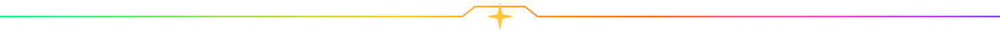
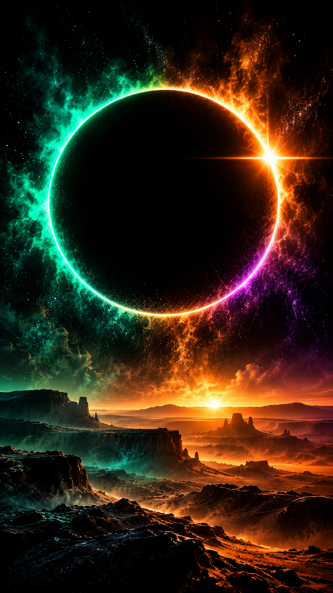

Buttons
Hover or tab to inspect button states.
Card borders
GAGeneral admission
Green angular frame.
GA+More atmosphere
Cyan angular frame.
VIPSolar gold
Gold angular frame.
3-DAYFull spectrum
Continuous gradient frame.
Section dividers

Eclipse loader
CSS and standalone SVG versions.
Glow effects
Spectrum atmosphere
Green glow
Purple glow
Mobile artwork

Sunset to
midnight
Art / Light / Sound
Cursor treatment
Optional cyan spark follows fine pointers. Native cursor remains visible; touch and reduced-motion settings disable the decoration.